‘My Little Hero’ is a digital game designed to facilitate communications between long-term hospitalized children's family members. It encourages all family members to play with the child and help them make progress in the game. The game's story was designed to help children and their family members understand the interactions between diseases and the immune system.
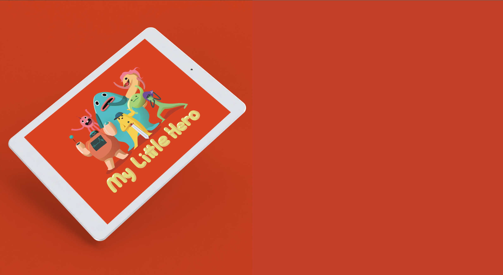
What inspired this project
I heard a story from my friend about how long-term hospitalization made her disconnected from the family when she was a child. She said long-term hospitalization makes the child lose connection with people outside of the hospital. It makes it difficult to have a common interest that the child can share with other family members. I decided to design an app that can connect families with long-term hospitalized children.
App Summary
Reality: If a child is hospitalized for a long time, communication between the family members becomes lacking and distant.
Problem: When the child is hospitalized for a long time, the family is divided into two groups. One group stays in the hospital to take care of the child, and the other group has a normal life. The difference between the two groups grows as the hospitalized term gets longer. It is a result of a separation between the two. In many cases, this is traumatic for the child. It can remain even after they are discharged from the hospital.
Solution: I wanted to encourage communication between family members and to create shared topics that can facilitate conversations. In the game, the child becomes an immune cell character and explores the body. Other members also become immune cells or DNA and help the child's character overcome the disease in the game. It allows the child and family members to understand the immune system and build healthy habits.
Importance: Communication between family can prevent trauma that can be caused by disconnection. Also, the child can build healthy habits through the game.
Problems
Problems caused by a child's long-term hospitalization
Separation of family: The family is divided into a nursing family and a family that has a normal life, resulting in a separation between the two.
Lack of stimulation through play: Although childhood needs a variety of stimuli, it is difficult to play in hospitals.
A lack of understanding of disease: The child did not understand why his body was sick or how the organs of his body work. Due to this, the treatment process was more difficult and painful. Young siblings were also jealous or harassed without understanding why sick siblings were hospitalized.
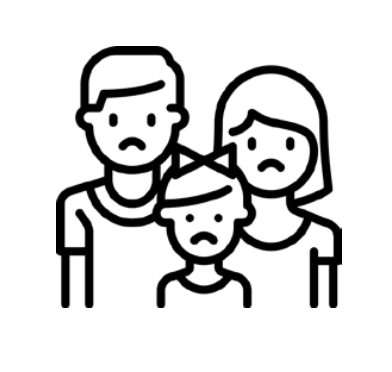
Design Insights
Digital Solution to Connect Family
A family is divided into two groups — one that belongs to the hospital and the other that belongs to everyday life. As the hospitalization gets longer, they come to have less common background to share.
“Let's make a family game that all family members can enjoy and can share common subjects.”
1. Increase Self-Confidence by Using the ‘Hero's Journey’ Structure
The child fighting with germs and becoming healthy seemed similar to the process of an ordinary character becoming a hero in the hero's myth story. Therefore, I decided to use the structure of the ‘Hero's Journey’.
Effects — Fun: The hero myth structure has long been an interesting organization for readers. The structure helps to keep readers interested in the story. Recovering self-esteem: Through the process of becoming a hero, the child overcomes the feeling of helplessness and restores confidence.
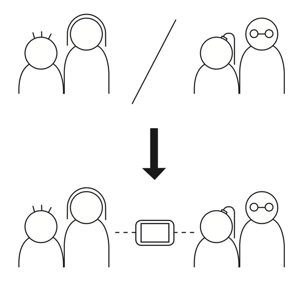
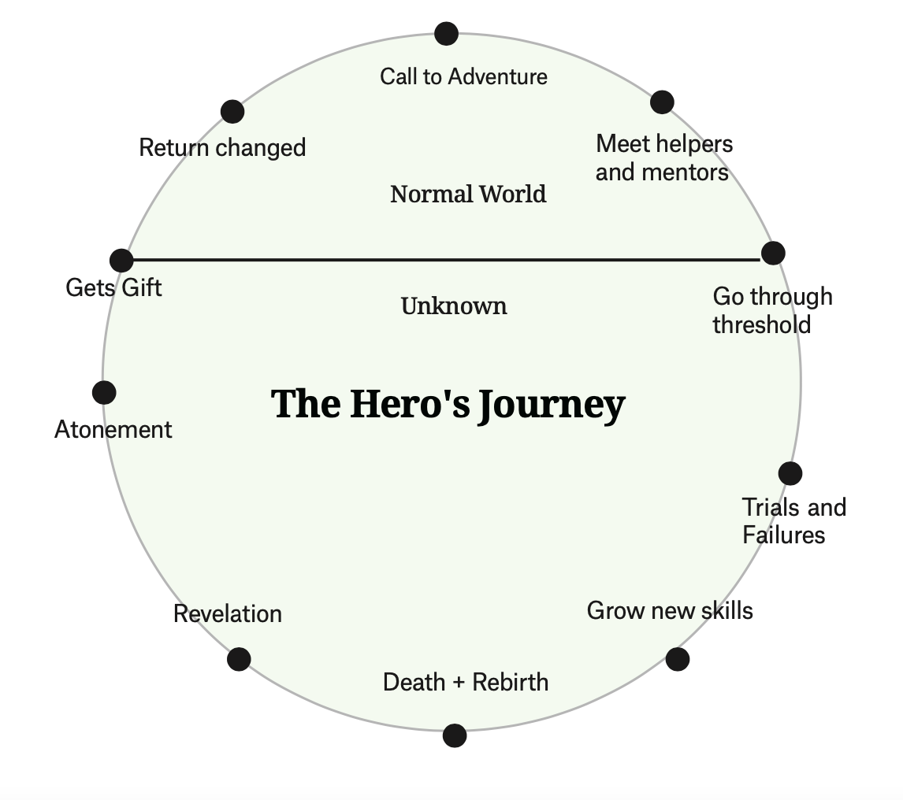
2. Understanding How the Body Works
Become an immune cell in the game: The child explores the whole body by becoming an immune cell in the game. The character fights with germs and meets other helpful immune cells.
Effects — Understanding the body: Children and their families can naturally learn about the body's immune system and about organs. It helps children understand the treatment they get at the hospital.
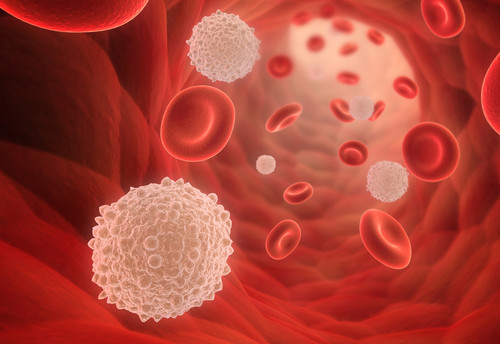
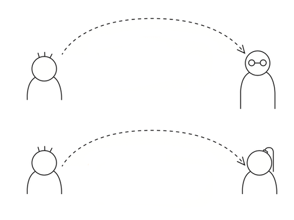
3. Family Sends Quests to Each Other to Entertain and Acquire Healthy Habits
Quest: “Sing a song to father! He will approve that you finished the quest!” — By singing a song to the father, they can have a family bond and the father helps the child's gameplay by approving the quest. A child can get a feeling of being supported by the family.
Quest: “To win the fight with the cold germ, you have to get a ginger tea! Ask for help from sister.” — By sending a quest related to a healthy lifestyle, a child can learn about healthy habits while playing the game.
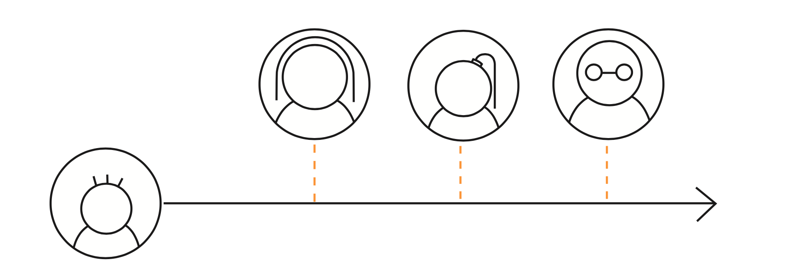
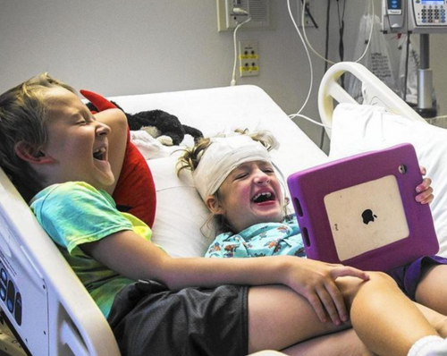
4. Receiving Support
A family member has the role of the supporter in the game. They collaborate whenever they meet germs in the game to solve the problems; by collaboration, they can finish the game and win the fight.
Solution
A digital game that the whole family can play together and understand the child's diseases and circumstances. Parents can participate in their daily lives because their roles are helper and supporter; their part is made of easy tasks like approving a child's requests or playing a mini-game.
Design
Concept Sketch
Sketch of one of the mini games, early character designs for immune cells, and a sketch of the background map of the game. Based on scientific facts, I designed immune cells based on their function in the body. For example, Macrophages that eat germs are drawn as a chubby character that likes eating (top left).
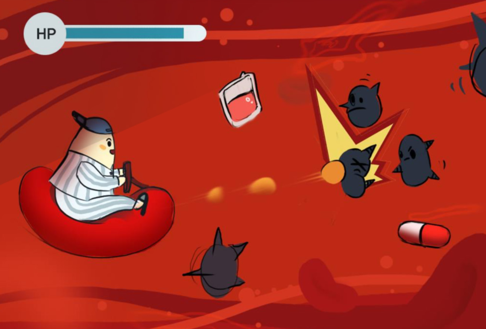
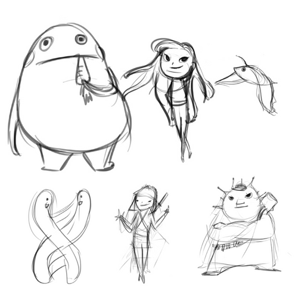
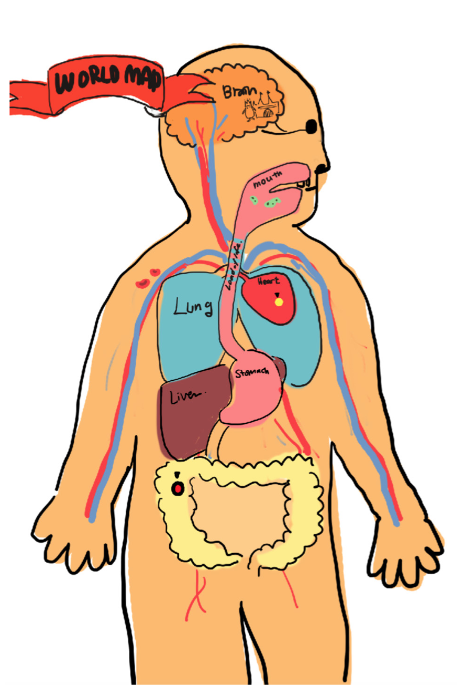
Character Design
Main character, immune cells, DNA, and neuron characters. The hospitalized child becomes the main character (top left) and becomes the game's main immune cell (bottom left). Parents become DNA, and siblings can choose immune cells that they want to be except the main immune cell.
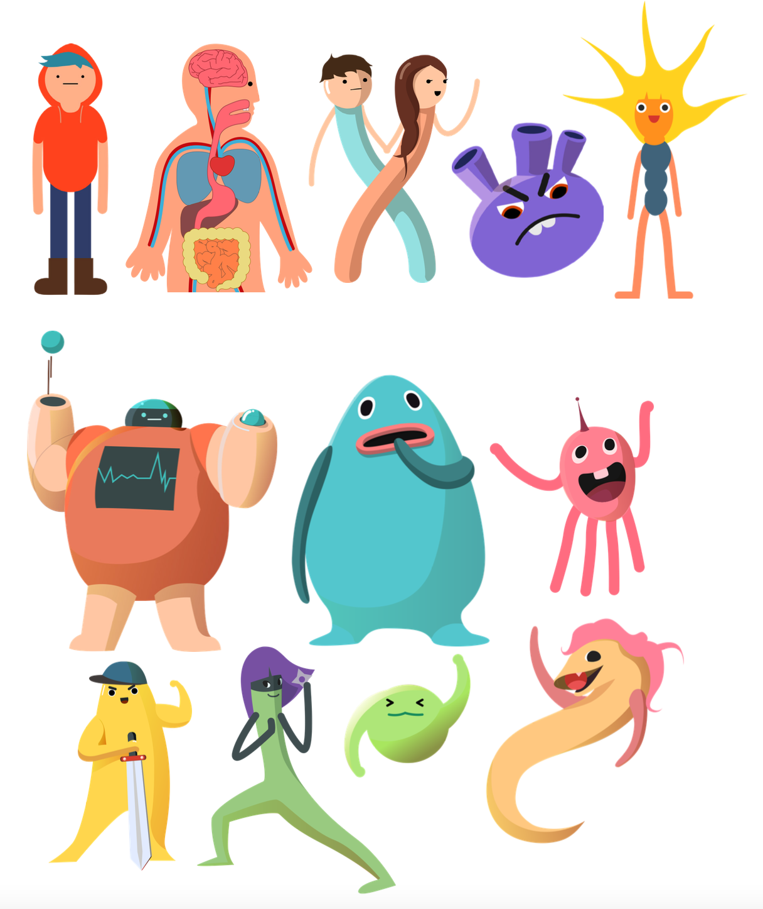
Mood Board
To deliver the feeling of being inside of the body, I set the main color as red. The characters are designed in a simple style to appeal to children.
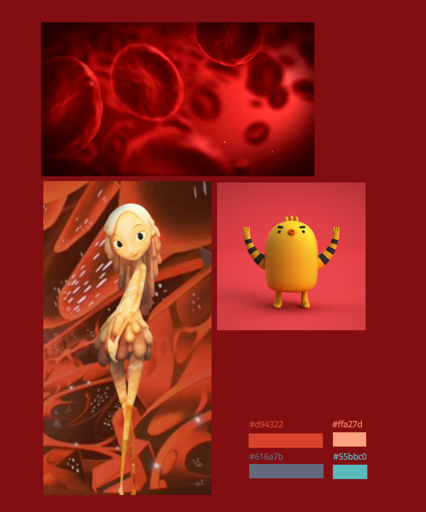
Final Design
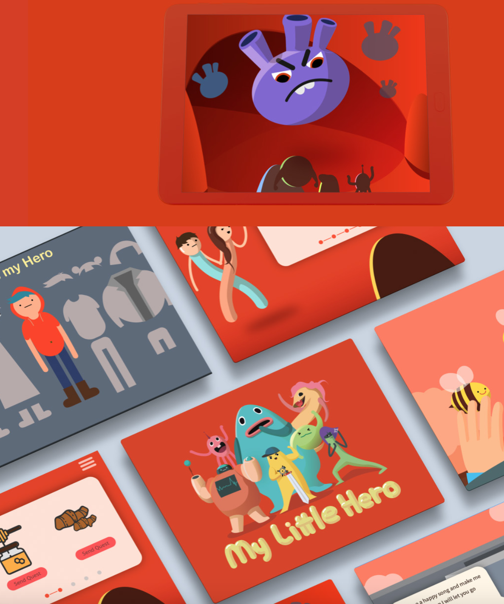
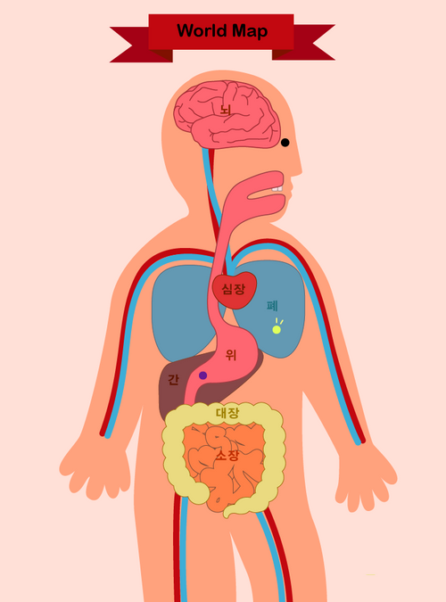
How to play
The hospitalized child can play the game with the participation and help of family members. Each member has a role in the game — immune cell, DNA, neuron. The child who is in the hospital is an immune cell who will later be a hero of the body and make the whole body healthy. One of the parents who stays with the child will be a mentor during the game. The remaining parents and siblings become other cells from the body, such as a neuron.
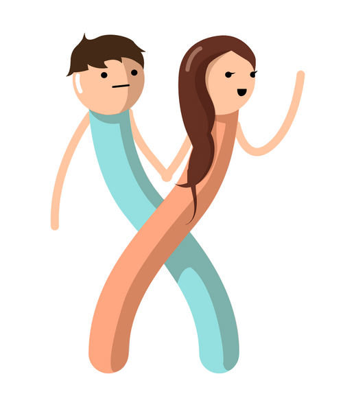
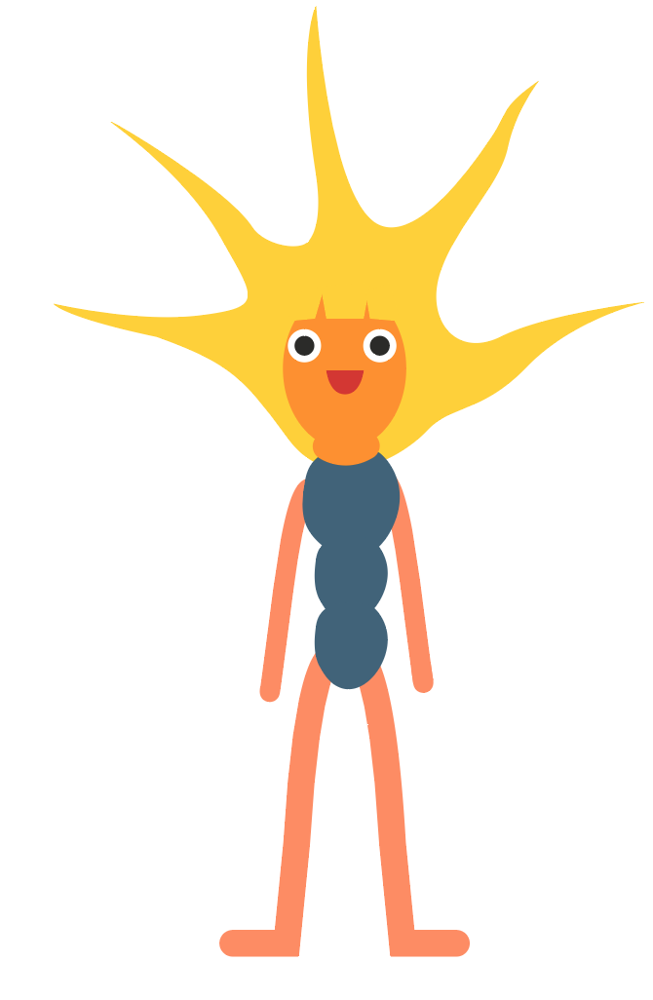
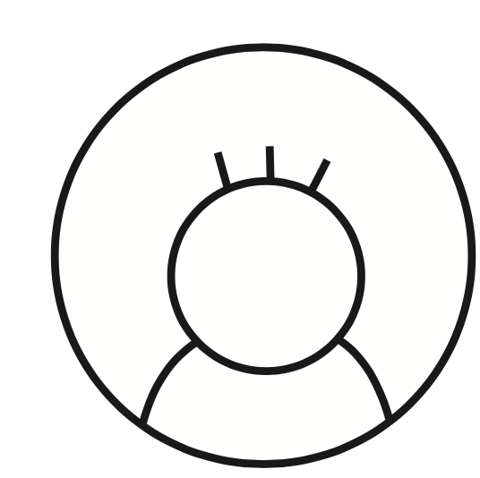
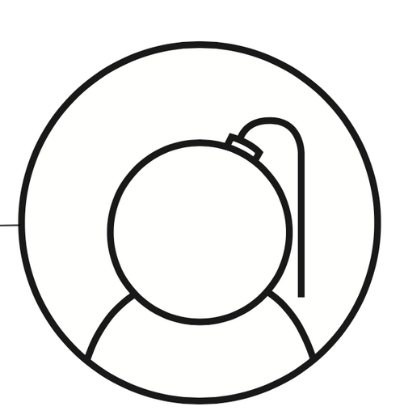
Child in the hospital
Start the game: The child starts the game and defines his or her hero character.
Meet the germ: Once he or she starts the game they meet a germ in the body and they have to fight germs with the help of supporters.
The help of the mentor: Whenever the hero character meets the germ, the DNA cell (which is one of the parents) gives advice on how to defeat the germ. The DNA cell gives quests to get the ingredients to fight the germ. The child can send the quest to other family members: another parent who is at work, or siblings.
Finish the task: When all the ingredients are collected, the caregiver staying in the hospital with the child approves the finish of the quest and the hero can defeat the germ and go to the next level.
Caregiver outside of the hospital
Sing a song to father: The parent who is not at the hospital as a caregiver receives the quest and gives a task of recording songs. The parent can hear the voice of the child and the child can sing a song to the parent so they can have bonding moments.
The child plays a mini game: Once the parent receives the recording, the child gets a chance to play a mini game to finish the quest.
Sibling outside of the hospital
Mini game: The sibling will play a mini game to collect honey for his or her sibling at the hospital.
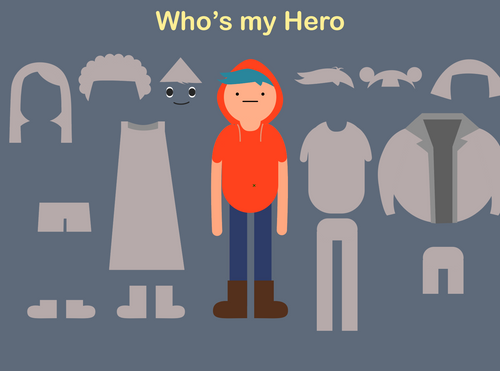
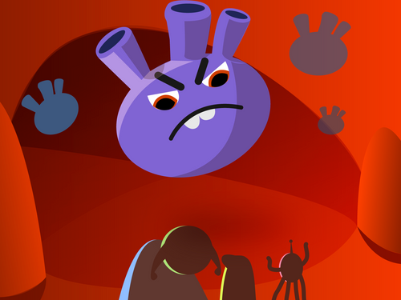
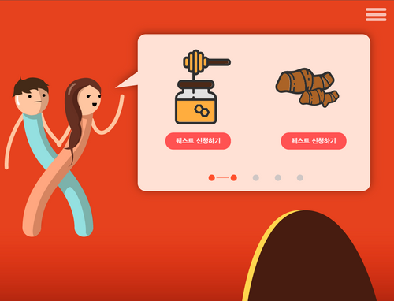
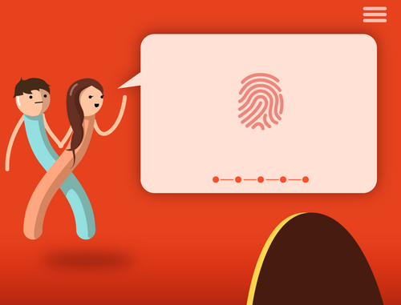
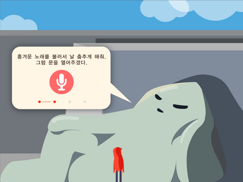
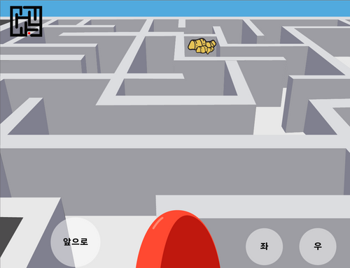
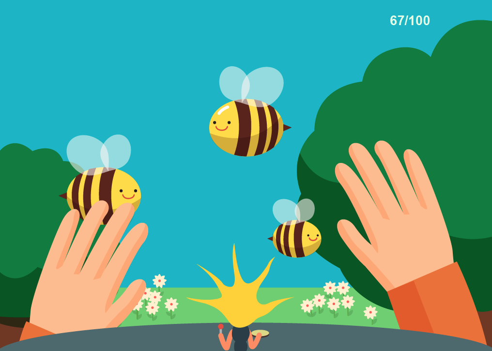